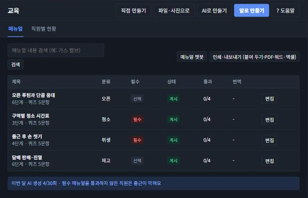
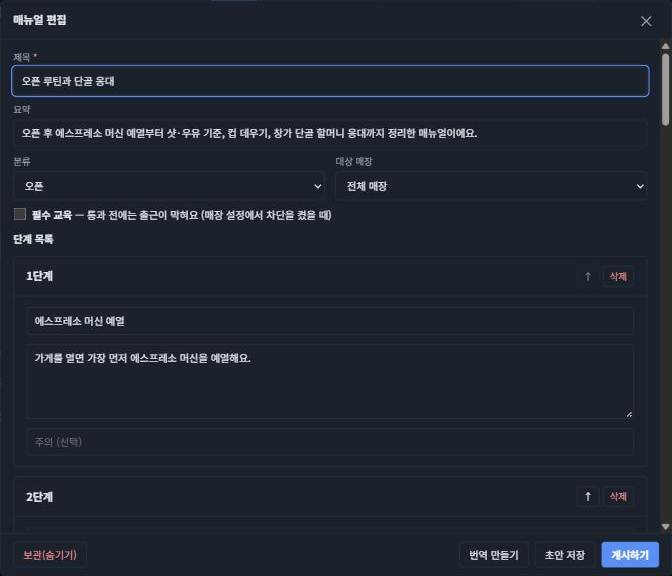
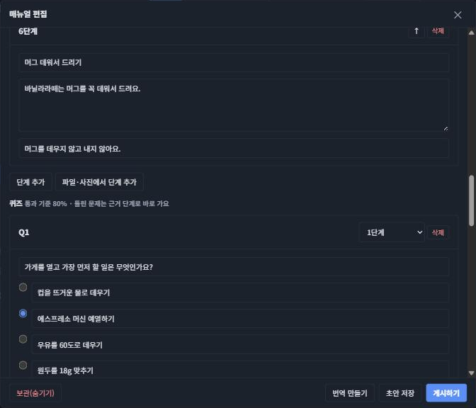
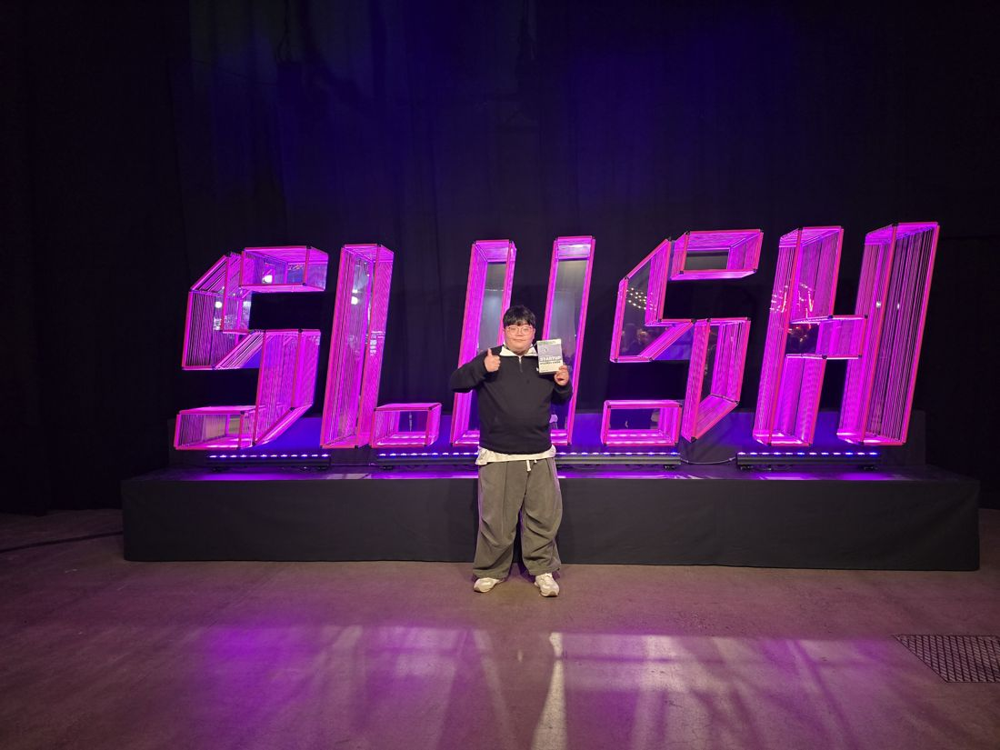
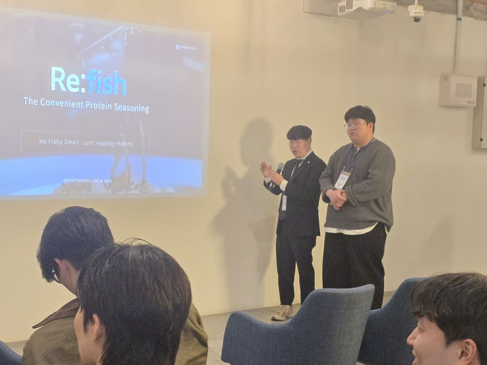
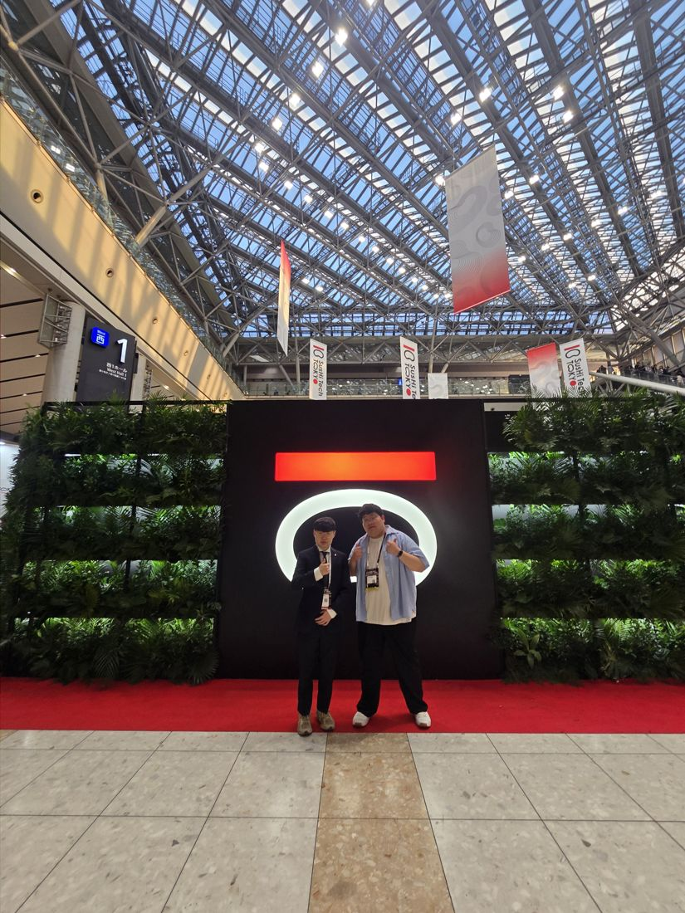
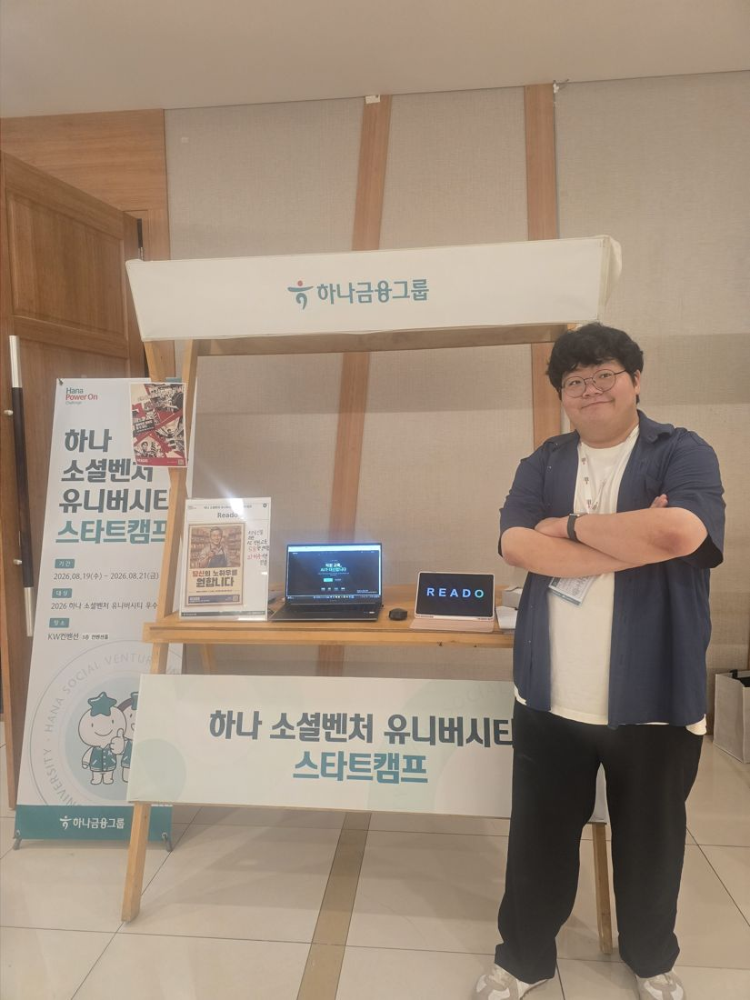
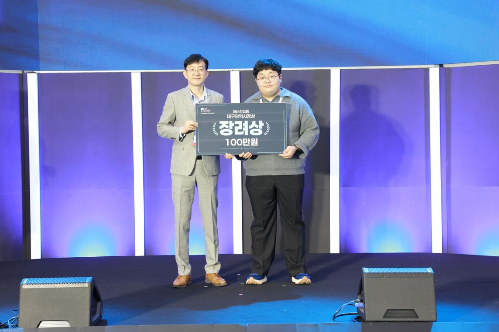
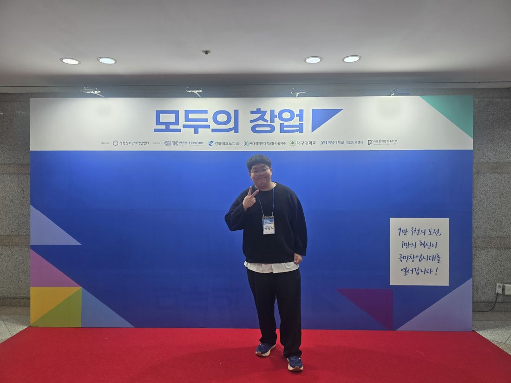
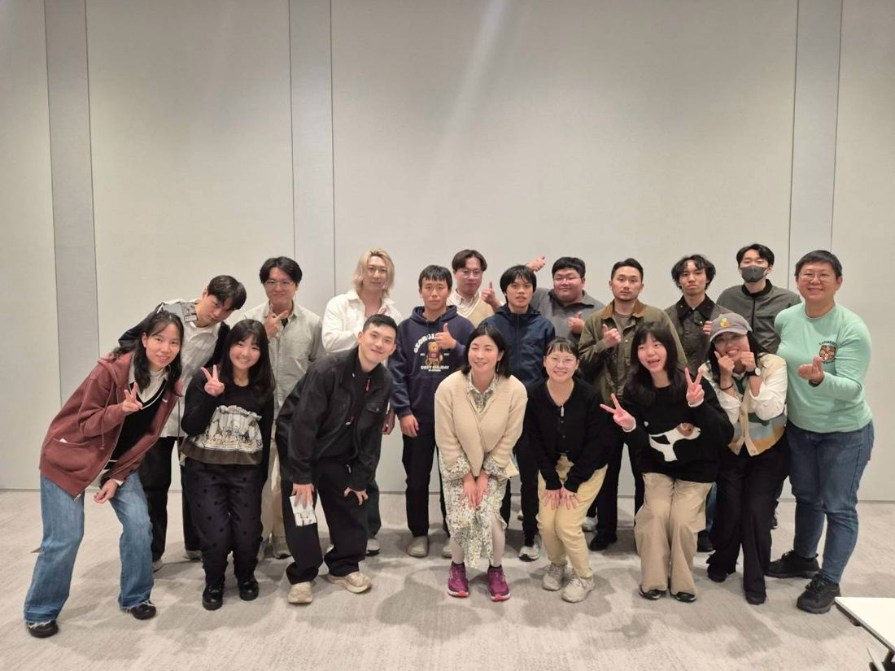

사장님이 알려주면 AI가 매뉴얼과 퀴즈로 만듭니다. 알바가 바뀌어도 처음부터 다시 가르치지 않습니다.
The owner explains, and AI turns it into a manual and a quiz. No teaching from scratch each time staff change.
オーナーが教えた内容を、AIがマニュアルとクイズにします。スタッフが入れ替わっても、最初から教え直す必要はありません。
소상공인을 위한 AI 직원교육·매장관리 서비스입니다. 가르친 내용과 일한 기록이 남아서, 사람이 바뀌어도 사라지지 않습니다.
대표는 PC방, 요식업 등 8개 업종에서 41개월 동안 아르바이트생으로 일했습니다. 매뉴얼 없이 사장님 말로만 이루어지는 교육을, 매장을 옮길 때마다 처음부터 다시 받았습니다.
사장님도 새 직원이 올 때마다 같은 설명을 반복하고, 직원이 그만두면 교육에 쓴 시간이 그대로 사라집니다.
2026년 1~3월 대구 현장에서 58건을 1:1로 인터뷰해, 이 문제가 개인 경험이 아니라 공통 구조라는 것을 확인했습니다.
디지털 직무교육이 필요하다고 답한 비율은 사장님 84.6%, 알바생 93.3%였습니다 (자체 인터뷰 58건).
교육 도구는 채용으로 이어지지 않고, 채용 플랫폼은 채용 이후의 기록을 갖지 못합니다. 레도는 이 둘을 하나의 기록으로 잇습니다.
사장님이 평소 하던 설명을 말로 녹음하면 AI가 매뉴얼과 이해도 퀴즈를 만들고, 알바생은 휴대폰으로 배웁니다. 틀린 문항을 짚어 주기 때문에 사장님은 그 부분만 다시 알려 주면 됩니다.
1~3은 기록을 쌓는 단계, 4~5는 기록을 쓰는 단계입니다. 수익은 기록을 쓰는 단계에서 납니다.



기능 하나하나는 이미 강한 서비스가 있습니다. 대타는 급구, AI 매뉴얼은 모두의매뉴얼, 본사 퀴즈는 FC다움이 합니다.
이 다섯을 한 흐름으로 잇는 서비스는 조사 범위에서 찾지 못했습니다. 레도의 차별점은 이수와 근태가 알바생 한 사람의 기록으로 이어져 대타와 채용에 쓰인다는 것이고, 이 기록은 매장 운영 도구를 직접 보급해야만 얻을 수 있습니다.
실증 표본이 작다는 한계가 있어, 다음 단계에서 3개 업종 이상으로 넓혀 다시 측정합니다.
지금은 베타라서 전 기능이 무료이고, 수익 구조는 아직 가동하지 않습니다. 지금 목표는 확인할 수 있는 근무·교육 기록을 쌓는 것입니다.
정식 출시 후에는 매장 1곳당 10만 원을 선납받고, 스케줄·출퇴근·교육을 꾸준히 쓰면 1년 뒤 전액 환급합니다. 무료로만 두면 가입만 하고 쓰지 않는 매장이 많아서 둔 장치이며, 매출로 잡지 않습니다.
가격은 가정이며, 지불의사 조사와 법률 검토 뒤 확정합니다.
사업체당 연 조회 수익 약 0.8만 원에 사업체 수를 곱한 값입니다 (자체 산정). 일본은 2021년 경제센서스 기준에 한국 단가를 적용했고 검증 전입니다.
지역은 동성로·교동에서 대구, 영남권, 전국 순서로 갑니다. 업종은 PC방에서 요식업, 카페·편의점으로 넓힙니다. 알바생은 사장님이 매장에서 앱을 나눠 주는 구조라 따로 모집 비용이 들지 않습니다.
쌓는다, 연결한다, 확장한다 순서로 갑니다.
해외는 두 갈래입니다. 외국인 알바생이 한국에서 쌓은 근무 기록과 이수증을 본국이나 일본의 고용주에게 직접 보여 주는 경력 확인이 하나이고, 일본판을 현지에서 운영해 현지에서 쌓고 현지에서 확인하는 방식이 다른 하나입니다. 직원 앱은 8개 언어를 지원합니다. 본격 진행은 국내 지표를 달성한 뒤입니다.
가르치는 사장님이 아니라 배우는 알바생 자리에서 41개월을 보냈습니다. 그래서 매뉴얼이 없는 매장에서 신입이 어디서 막히는지 압니다. 인터뷰 58건과 실증 설계, 기획과 고객 검증을 직접 했습니다.







기획, 고객 검증, QA, 알파 버전 개발은 팀이 직접 했고, 규모가 큰 구현만 외주로 나눴습니다.
An AI staff-training and store-management service for small business owners. What was taught and what was worked stays on record, so it does not vanish when people leave.
Our founder worked part-time for 41 months across 8 industries, including PC cafés and restaurants. Training was spoken, never written, and it started over at every new store.
Owners repeat the same explanation for every new hire, and the hours spent teaching disappear when that person quits.
From January to March 2026 we ran 58 one-on-one interviews in Daegu and confirmed this is a shared structure, not one person's experience.
84.6% of owners and 93.3% of part-timers said they need digital job training (our 58 interviews).
Training tools do not lead to hiring, and job boards hold no record of what happens after hiring. Reado links the two into one record.
The owner records the explanation they already give out loud. AI writes the manual and a comprehension quiz, and the part-timer learns on a phone. Missed questions are flagged, so the owner only re-teaches those parts.
Steps 1 to 3 build the record, steps 4 and 5 use it. Revenue comes from the steps that use it.
Each feature already has a strong player in Korea: Geupgu for shift cover, Modu Manual for AI manuals, FC Daum for head-office quizzes.
Within our research we found no service that links all five in one flow. Reado's edge is that training and attendance become one person's record, used for shift cover and hiring. That record can only be earned by putting the store tool in owners' hands.
The pilot sample is small. Next we re-measure across 3 or more industries.
We are in beta, every feature is free, and the revenue model is not switched on yet. The goal now is to build verifiable work and training records.
After launch each store prepays ₩100K, refunded in full after a year of steady use of scheduling, attendance and training. Free-only signups tend to go unused, so this is a commitment device, not counted as revenue.
Prices are assumptions, to be fixed after willingness-to-pay research and legal review.
Lookup revenue of about ₩8,000 per business per year, times the number of businesses (our estimate). The Japan figure applies Korean pricing to 2021 Economic Census counts and is unverified.
By region: Dongseong-ro and Gyo-dong, then Daegu, the southeast, and nationwide. By sector: PC cafés, then restaurants, then cafés and convenience stores. Owners hand the app to their own staff, so we pay nothing to recruit part-timers.
Build the record, connect people, then expand.
Overseas has two tracks. One: foreign part-timers show the work record and certificates they earned in Korea directly to employers at home or in Japan. Two: a Japan edition run locally, where records are built and verified in Japan. The staff app supports 8 languages. Full rollout follows our domestic targets.
I spent 41 months as the part-timer being taught, not the owner teaching. So I know where a new hire gets stuck in a store with no manual. I ran the 58 interviews, designed the pilot, and do planning and customer validation myself.
Planning, customer validation, QA and the alpha build were done in-house. Only large-scale implementation is outsourced.
小規模事業者のためのAIスタッフ教育・店舗管理サービスです。教えた内容と働いた記録が残るので、人が入れ替わっても消えません。
代表はネットカフェや飲食など8業種で41か月間アルバイトとして働きました。マニュアルがなく口頭だけの教育を、店を移るたびに最初から受け直しました。
オーナーも新人が来るたびに同じ説明を繰り返し、スタッフが辞めると教育に使った時間がそのまま消えます。
2026年1〜3月に大邱の現場で58件の1対1インタビューを行い、これが個人の経験ではなく共通の構造だと確認しました。
デジタルの職務教育が必要だと答えた割合は、オーナー84.6%、アルバイト93.3%でした（自社インタビュー58件）。
教育ツールは採用につながらず、求人プラットフォームは採用後の記録を持ちません。Readoはこの2つを1つの記録でつなぎます。
オーナーが普段している説明を声で録音すると、AIがマニュアルと理解度クイズを作り、アルバイトはスマホで学びます。間違えた問題を示すので、オーナーはその部分だけ教え直せば済みます。
1〜3は記録を貯める段階、4〜5は記録を使う段階です。収益は記録を使う段階で生まれます。
機能ごとにはすでに強いサービスがあります。代打は급구、AIマニュアルは모두의매뉴얼、本部クイズはFC다움です。
この5つを1つの流れでつなぐサービスは、調査範囲では見つかりませんでした。Readoの違いは、修了と勤怠がアルバイト1人の記録としてつながり、代打と採用に使われる点です。この記録は店舗運営ツールを自ら普及させなければ得られません。
実証サンプルが小さいという限界があり、次の段階で3業種以上に広げて測り直します。
今はベータ版で全機能が無料で、収益モデルはまだ稼働していません。今の目標は、確認できる勤務・教育記録を貯めることです。
正式リリース後は1店舗あたり10万ウォンを前払いでいただき、シフト・出退勤・教育を継続して使えば1年後に全額返金します。無料だけでは登録して使わない店が多いための仕組みで、売上には計上しません。
価格は仮定で、支払い意向の調査と法務確認の後に確定します。
事業所あたり年間照会収益 約8千ウォンに事業所数を掛けた値です（自社算定）。日本は2021年経済センサスの数に韓国の単価を当てはめたもので、未検証です。
地域は東城路・校洞から大邱、嶺南圏、全国の順です。業種はネットカフェから飲食、カフェ・コンビニへ広げます。アルバイトにはオーナーが店でアプリを配るので、別途の募集コストがかかりません。
貯める、つなぐ、広げるの順で進めます。
海外は2つの道筋があります。1つは、外国人アルバイトが韓国で貯めた勤務記録と修了証を、母国や日本の雇用主に直接見せる経歴確認です。もう1つは、日本版を現地で運営し、現地で貯めて現地で確認する方式です。スタッフ用アプリは8言語に対応しています。本格展開は国内指標の達成後です。
教えるオーナーではなく、教わるアルバイトの立場で41か月を過ごしました。だから、マニュアルのない店で新人がどこでつまずくのかを知っています。インタビュー58件と実証設計、企画と顧客検証を自ら行いました。
企画、顧客検証、QA、アルファ版の開発はチームが自ら行い、規模の大きい実装だけを外注しました。